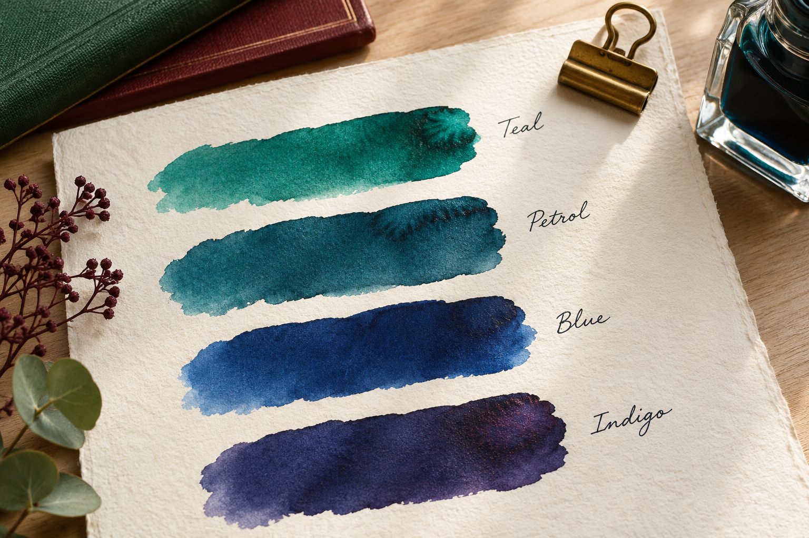

Pens & Inks
A few new colours to get to know
I've added a few new inks to my collection and have been spending time getting to know them on the page - from colour and shading to how they feel to write with.
Read the entry ->Notes from my desk
Pens, inks, little discoveries, and things in progress.
Pens & Inks
I've added a few new inks to my collection and have been spending time getting to know them on the page - from colour and shading to how they feel to write with.
Read the entry ->
Pens & Inks
A closer look at my latest fountain pen - first impressions, how it writes, and how it fits into my everyday setup.

Pens & Inks
I've been exploring different green inks lately, and I think I may have found a new favourite.

On My Desk
A small reminder of why I love writing by hand - the focus, the calm, and the simple pleasure of it.

Experiments
I set aside a bit of time to swatch a few inks side by side - a simple but really helpful way to see how they compare.

Experiments
Playing with a simple flower sketch and trying out different line weights and shading with ink.

Experiments
A few everyday materials and colours that are sparking ideas for my next round of creative experiments.